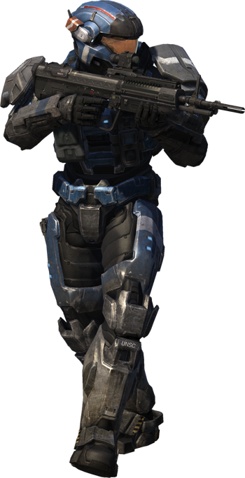

Halo Reach: La Caída de un Mundo
Introducción
Halo Reach narra los eventos que llevaron a la caída del planeta Reach, el segundo mundo más importante de la humanidad y principal centro de operaciones militares. La historia sigue al Equipo Noble, un grupo de Spartans de élite, durante los últimos días de la batalla contra el Covenant en el año 2552.
Reach era el corazón de las operaciones del UNSC, hogar de la Oficina de Inteligencia Naval (ONI) y el lugar donde se entrenaban los Spartans. Su caída marcó uno de los momentos más oscuros en la guerra humano-Covenant, pero también el comienzo de los eventos que llevarían al descubrimiento de los anillos Halo.
Misiones Principales
Invernadero
El Equipo Noble es enviado a investigar una perturbación en las comunicaciones en la colonia de Visegrád. Lo que comienza como una misión rutinaria se convierte en el primer contacto con las fuerzas Covenant que han llegado en secreto a Reach. Los Spartans descubren que el Covenant ha estado en el planeta más tiempo del que nadie sospechaba.
Base de la Espada
El equipo debe proteger la base aérea de Sabre para asegurar las defensas orbitales de Reach. Participan en intensos combates aéreos contra las fuerzas Covenant utilizando los avanzados cazas Sabre. Esta misión es crucial para mantener la superioridad aérea y proteger la flota del UNSC en órbita.
Operación: UPPERCUT
Noble Team se infiltra en una instalación Covenant para destruir una corbeta enemiga que amenaza las defensas planetarias. Utilizan un cañón de masa improvisado para lanzar una bomba hacia la nave. Jorge sacrifica su vida para asegurar el éxito de la misión, demostrando el compromiso de los Spartans con la protección de la humanidad.
El Pilar del Otoño
La misión final donde Noble Six ayuda al Capitán Keyes a escapar con el Pilar del Otoño, llevando consigo a Cortana y las coordenadas del anillo Halo. Mientras Reach cae, esta nave logra escapar, iniciando los eventos del primer Halo: Combat Evolved. Six permanece en la superficie para asegurar el despegue, convirtiéndose en el último Spartan en caer.

Personajes del Equipo Noble
| Personaje | Rango | Especialidad | Historia | Imagen |
|---|---|---|---|---|
| Noble Six | SPARTAN-B312 | Operaciones especiales | Un Spartan-III con un expediente clasificado, conocido como "asesino de mano vacía". Es el protagonista controlado por el jugador. | |
| Carter-A259 | Comandante | Liderazgo táctico | Líder del Equipo Noble, Spartan-II como Jorge. Serio y comprometido, sacrifica su vida estrellando su pelican contra un crucero Covenant. |  |
| Kat-B320 | Teniente | Tecnología e inteligencia | Experta en tecnología y hacking. Pierde su brazo izquierdo antes de los eventos del juego. Muere por un disparo de francotirador. | |
| Jorge-052 | Sargento | Armas pesadas | El único Spartan-II en el equipo. De gran tamaño y corazón. Se sacrifica para destruir una corbeta Covenant. | |
| Emile-A239 | Especialista | Combate cercano | Agresivo y experto en combate cuerpo a cuerpo. Muere defendendo el cañón MAC durante la evacuación del Pilar del Otoño. | |
| Jun-A266 | Francotirador | Tirador de precisión | El único miembro del equipo que sobrevive, asignado a proteger a la Dra. Halsey durante la evacuación. |
Calaveras (Skulls)
¿Qué son las Calaveras en Halo Reach?
Las Calaveras son objetos coleccionables ocultos en el juego que modifican la jugabilidad cuando se activan. Cada calavera ofrece un efecto único que puede hacer el juego más desafiante o divertido.
Efectos de las Calaveras
Algunas de las calaveras más notables incluyen:
- Boom: Los enemigos explotan al morir
- Grunt Birthday Party: Los Grunts explotan en confeti cuando mueren con disparos en la cabeza
- Mythic: Los enemigos tienen el doble de salud
- IWHBYD: Desbloquea diálogos raros y divertidos
- Famine: Las armas contienen la mitad de munición
Encontrar todas las calaveras es un desafío que requiere explorar meticulosamente cada nivel. Algunas están escondidas en lugares casi inaccesibles.
Las calaveras no solo añaden replay value al juego, sino que también permiten personalizar la experiencia de juego para mayor desafío o diversión.
Legado de Reach
La batalla de Reach marcó un punto de inflexión en la guerra contra el Covenant. Aunque el planeta cayó, los sacrificios del Equipo Noble permitieron que el Pilar del Otoño escapara con información crucial que cambiaría el curso de la guerra, llevando directamente a los eventos del primer Halo.
El sacrificio de los Spartans en Reach se convirtió en un símbolo de la resistencia humana. La historia del Equipo Noble, especialmente la última resistencia de Noble Six, ha inspirado a generaciones de soldados del UNSC. La caída de Reach también demostró la vulnerabilidad de la humanidad y la necesidad de medidas desesperadas, lo que llevaría posteriormente al programa Spartan-IV.
Armas y Vehículos
Halo Reach introdujo varias armas y vehículos nuevos a la franquicia:
- DMR: Rifle de tirador designado, perfecto para combate a media distancia
- Needle Rifle: Arma Covenant que puede causar supercombine
- Grenade Launcher: Lanzagranadas proppelente
- Sabre: Caza espacial de superioridad aérea
- Falcon: Helicóptero de transporte con capacidad de fuego